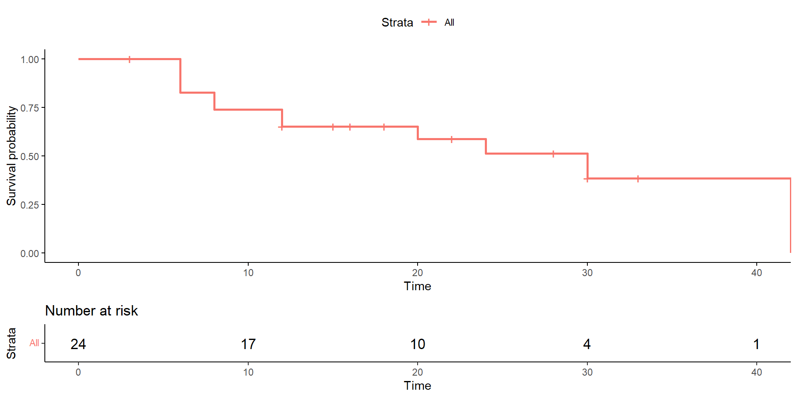

| Patient | Survival_date | Category |
|---|---|---|
| 1 | 3 | C |
| 2 | 6 | D |
| 3 | 6 | D |
| 4 | 6 | D |
| 5 | 6 | D |
| 6 | 8 | D |
| 7 | 8 | D |
| 8 | 12 | D |
| 9 | 12 | D |
| 10 | 12 | C |
| 11 | 15 | C |
| 12 | 16 | C |
| 13 | 18 | C |
| 14 | 18 | C |
| 15 | 20 | D |
| 16 | 22 | C |
| 17 | 24 | D |
| 18 | 28 | C |
| 19 | 28 | C |
| 20 | 28 | C |
| 21 | 30 | D |
| 22 | 30 | C |
| 23 | 33 | C |
| 24 | 42 | D |
Survival Analysis
BMEG 5103
Ariel Mundo
University of Arkansas
Introduction
(from Wikipedia)
“Survival analysis is a branch of Statistics for analyzing the expected duration of time until one event occurs.
What proportion of the population will survive past a certain time?
Of those that survive, at what rate will they die? ”
Other Names
Reliability analysis
Time-to-event analysis
Biomedical Applications
Cancer studies: time to an event of interest
Time from complete remission to relapse or progression (time to event)
Or time from diagnosis to death (survival time)
Time to heart attack
Clark, et al. Survival Analysis Part I: Basic Concepts and first analyses. 2003
Why can’t we do a rm-ANOVA? or a LMEM?
Survival data is positively skewed (long tail to the right)
In other words, data does not follow a normal distribution
Challenges
Only some individuals have experienced the event
Survival times will be unknown for a subset of the sample
This leads to an important concept: Censoring
Censoring
“Censoring means that the total survival time for that subject cannot be accurately determined”
Rich, et al. A practical guide to understanding Kaplan-Meier Curves. 2010
Censoring
Causes
- Subject drops out
- Lost to follow-up
- Data is not available
- The study ends before (i.e., subject survived at least until the end of the study, but we don’t know what happened after)
Rich, et al. A practical guide to understanding Kaplan-Meier Curves. 2010
Censoring
Challenges
Censored survival times underestimate the true time to event
Subjects 1,3,4,5 and 8 were censored before 10 years

https://www.emilyzabor.com/tutorials/survival_analysis_in_r_tutorial.html
Censoring
- In other words, patients enter the study at \(t_0\), and they die at \(t_0+t\)
- But \(t\) is unknown (either still alive or lost to follow-up)
- If the invidual was last known to be alive at time \(t_0+c\) the time \(c\) is called a censored survival time
- Because censoring occurs after the individual entered the study it is known as right censoring (censoring to the right of the of the last known survival time)
An Example
From Clark et al. A prognostic model for ovarian cancer. BJC. 2001
- Data from an ovarian cancer study
- Patients diagnosed with primary epithelial ovarian carcinoma
- Between January 1990 and December 1999
- Follow-up data available until the end of 2000
- By that time, 75.9% had died
An Example
“Patient time”
R: Relapse
D: Death from ovarian cancer
Do: Death from another cause
A: Attended last clinic visit (were alive!)
L: Loss to follow-up
X: Death
Dashed vertical line is the date of the last follow-up
Clark, et al. Survival Analysis Part I: Basic Concepts and first analyses. 2003
An Example
- 4 patients had a non-fatal relapse (R)
- 1 lost at follow-up
- 7 patients died (5 from ovarian cancer)
- The event of interest here is all-cause mortality (also called overall survival)
An Example
- The data now is plotted using “survival time”
- Nonfatal relapses are ignored
- Those who have not died are censored
- Q: What would change if we were interested in deaths from ovarian cancer only?
Clark, et al. Survival Analysis Part I: Basic Concepts and first analyses. 2003
An Example
Q: What would change if we were interested in deaths from ovarian cancer only?
A: Patients 5 and 6 would need to be censored as well
Another example
- From McIllmurray and Turkie (1987), survival times of 24 patients with Dukes’ C colorectal cancer.
Plotting the data
Let’s see how the plot looks like:
Categoryindicates censoring (C) or dead (D).
A word about notation!
- Survival times are denoted by \(t\) and Censored times are denoted by \(t+\):
- Censored time for patient 1 is 3+
- Survival time for patient 2 is 6
- If there are ties in survival/censored data (like the 3 patients at 12 mo.), censored observations get a higher rank.
- In this case, survival times are 12, 12 and 12+
- Ranks would be 8, 9 and 10
How to tackle the problem of censored data
- In 1958, Kaplan & Meier proposed a method to estimate survival probabilities that has since then become the default method to analyze censored data.
The rationale behind Kaplan-Meier
“What is the probability that patients will survive a certain length of time?”
How we calculate this probability:
The probability of surviving 42 months is the probability of surviving the 42th month having already survived the previous 41 months
The same rationale applies for surviving 41 mo.: the probability of surviving 41, already survived the previous 40 mo.
The rationale behind Kaplan-Meier
\(p_1\)= probability of surviving at least 1 month after enrollment in trial
\(p_{42}\)= conditional probability of surviving the 42nd month after having survived month 41
\[S(42)=p_1\times p_2\times. . .\times p_{42}\]
Where \(S\) denotes the overall probability of surviving 42 months after enrolling in the trial.
The rationale behind Kaplan-Meier
In general, the probability of survival to time \(t\) is
\[S(t)=p_1 \times p_2 \times...\times p_t\]
For any time \(t\) (days, months, years, etc.),
\[\begin{equation} \begin{aligned} p_t= \frac{\text{Number of patients followed for at least } t-1 \\ \text { and who survive day } t} {\text{Number of patients alive at the end of day }t-1} \end{aligned} \end{equation}\]
The rationale behind Kaplan-Meier
- For survival data, we usually estimate the Survival Probability (a.k.a. Survivor Function)
- Survival \(S(t)\):
Probability that an individual survives from the time origin to a specific future time \(t\)
- Survival \(S(t)\):
Kaplan-Meier Survival Estimate
Suppose that \(k\) patients have events at distinct times
\[t_1<t_2<t_3<t_4<...<t_k\]Think that \(t\) denotes the start of a short time interval which ends at \((t+1)\).
We then use \(n_t\) as the number of patients alive at the start of the interval → these are at risk of death during that short interval afterwards.
Kaplan-Meier Survival Estimate
We assume these events are independent:
We can calculate the cumulative survival probability by multiplying the probabilities of surviving from one interval to the next.We denote the number of patients dying in the short time interval (just after \(t\)) as \(d_t\).
The number of patients surviving the interval is then \((n_t-d_t)\)
This number in turn becomes the number starting interval \(n_{t+1}\)
Kaplan-Meier Survival Estimate
We can write then
\[p_t=\frac{(n_t-d_t)}{n_t},\]
which can be estimated also as
\[p_t=1-\frac{d_t}{n_t}.\]
Kaplan-Meier Survival Estimate
When \(d_t=0\) then \(p_t=1\), because the number at risk does not change.
The value of \(S(t)\) changes only when at least one person dies.
Therefore, we skip the times when there are no deaths (We don’t calculate \(S(t)\))
Recall that we estimate the probability of surviving at \(t\) as the product of all the probabilities up to time \(t\)
Kaplan-Meier Survival Estimate
- The succesive probabilites of survival \(S(1), S(2)...,S(t)\) are known as the Kaplan-Meier or product-limit estimates of survival.
\[S(t)=S(t-1) \left( 1-\frac{d_t}{n_t} \right),\]
where:
\(S(t)\): the probability of being alive at time \(t\).
\(S(t-1)\): probability of being alive at \(t-1\)
\(n_t\): number of patients alive just before \(t\)
\(d_t\): number of patients dying (events) at \(t\)
Doing the calculations
Going back to the Dukes’ colorectal cancer example:
| Rank | Survival time \(t\) | Number at risk \(n_t\) | Observed deaths \(d_t\) | \(p_t=1-\frac{d_t}{n_t}\) | Survival proportion \(S(t)\) |
|---|---|---|---|---|---|
| - | 0 | 24 | 0 | 1 | 1 |
| 1 | 3+ | 24 | 0 | ||
| 2 | 6 | ┓ | |||
| 3 | 6 | | 23 | 4 | 0.8261 | 0.8261 |
| 4 | 6 | | | |||
| 5 | 6 | ┛ | |||
| 6 | 8 | ┓19 | 2 | 0.8947 | 0.7391 |
| 7 | 8 | ┛ |
Note that \(n_t\) at 6 mo. is 23, censored patients do affect \(n_t\)
\(p_t\) and \(d_t\) are only calculated when someone dies
Doing the Calculations
Q: What is \(n_t\) at 12 mo?
A: 17 (19 were at risk at 8 mo and two died at 12 mo)
Q: What would be the values of \(p_t\) and \(S(t)\) at 12 months?
Doing the Calculations
| Rank | Survival time \(t\) | Number at risk \(n_t\) | Observed deaths \(d_t\) | \(p_t=1-\frac{d_t}{n_t}\) | Survival proportion \(S(t)\) |
|---|---|---|---|---|---|
| - | 0 | 24 | 0 | 1 | 1 |
| 1 | 3+ | 24 | 0 | ||
| 2 | 6 | ┓ | |||
| 3 | 6 | | 23 | 4 | 0.8261 | 0.8261 |
| 4 | 6 | | | |||
| 5 | 6 | ┛ | |||
| 6 | 8 | ┓19 | 2 | 0.8947 | 0.7391 |
| 7 | 8 | ┛ | |||
| 8 | 12 | ┓17 | 2 | 0.8824 | 0.6522 |
| 9 | 12 | ┛ |
Creating the plot

- Vertical lines are the censored times
Strataindicates if we have different groups of data- At the bottom, we have the number of patients at risk with indicated timepoints
Other ways to present the data
In certain circumstances, \(1-S(t)\) is plotted against \(t\): Cumulative death curve
- This is done when the outcome is rare or is of benefit of the patient:
- Healing of a lesion, achieving pregnancy, etc.
- This is done when the outcome is rare or is of benefit of the patient:
Median Survival Time: No Censored Obs.
The time for which 50% of the population survives
If there are no censored observations (e.g., all the patients in a trial have died), the median survival time \(M\), is estimated:
- By the middle observation of the ranked survival times \(t_{(1)}, t_{(2)},...,t_{(n)}\) if the number of observations is odd
- Average of \(t_{n/2}\) and \(t_{(n/2+1)}\) if \(n\) is even
Median Survival Time: Censored Obs.
- When there are censored survival times, \(M\) is calculated by obtaining the Survival curve and then, finding the value that satisfies:
\[S(M)=0.5\]
- Extend a horizontal line from \(S(t)=0.5\) until the curve is met, and then move vertically down
Median Survival Time
Confidence Intervals
How reliable are the estimates of the Kaplan-Meier curve?
We need to estimate confidence intervals (CIs) to answer this
There is some math behind this, but the main point is that the interval is estimated using:
\[S(t) \pm 1.96 \times SE(S(t))\] - Where \(SE\) is the standard error (calculated using Greenwod’s formula)
- Any familiarity with the 1.96 in the equation?
- We are assuming normally distributed estimates, and 95% of the area in a normal distribution is within 1.96 standard deviations from the mean
Three Treatment Groups Example
- Data from one of the first successful trials of adjuvant chemo. in colorectal cancer.
- Analyzing subset of 929 patients where death was the event of interest
- 3 treatment groups:
- Control (“Observation”)
- Levimasole (“Lev”)
- Levimasole+5-FU (“amisole”)
Three Treatment Groups Example
Moertel, C. et al. The New England Journal of Medicine. 1990.
So far…
We defined and calculated \(S(t)\)
Created Survival Curve
Added the CIs
How do we compare two survival curves?
What We Can’t Do
Longitudinal data can’t be analyzed using cross-sectional tests (t-test, one way ANOVA, etc.)
The reason is that a single time point gives a biased perception of what actually is going on namely, ignores the effect of time
The Log-rank Test: Rationale
If two treatments have the same effect, the survival curves should be different only due to random variation in the sampling process
How can we know that the difference between two Survival Curves is caused by the effect of treatment?
In other words, we want to test that:
- \(H_o\): There is no difference between the treatment groups survival curves
- This means that if we fail to reject \(H_o\) the probability of a death occuring at any time point is the same in each treatment group.
Bewick, Cheek, Ball. Critical Care. 2004
The Log-rank Test
We compute a \(\chi^2\) statistic (used to compare the observed results with expected results using categorical data)
The test statistic is calculated in terms of the observed (O), and expected (E) values.
O: total number of observed deaths in each group
E: Sum of the expected number of deaths at the time of each death (i.e., risk of death at that time multiplied by the number alive int he group).
How it works
We first order the survival times in each group (if a death and a censored observation are tied, the censored observation is allocated a higher rank).
An example: Data from 51 patients with recurrent gliomas.
- A: astrocytoma
- G: glioblastoma
Is there a significant difference between the survival times between the two groups?
How it works
The data:
Group A | |||
|---|---|---|---|
| id | Group | Time | Condition |
| 1 | A | 6 | 1 |
| 2 | A | 13 | 1 |
| 3 | A | 21 | 1 |
| 4 | A | 30 | 1 |
| 5 | A | 31 | 0 |
| 6 | A | 37 | 1 |
| 7 | A | 38 | 1 |
| 8 | A | 47 | 0 |
| 9 | A | 49 | 1 |
| 10 | A | 50 | 1 |
| 11 | A | 63 | 1 |
| 12 | A | 79 | 1 |
| 13 | A | 80 | 0 |
| 14 | A | 82 | 0 |
| 15 | A | 82 | 0 |
| 16 | A | 86 | 1 |
| 17 | A | 98 | 1 |
| 18 | A | 149 | 0 |
| 19 | A | 202 | 1 |
| 20 | A | 219 | 1 |
Group G | |||
|---|---|---|---|
| id | Group | Time | Condition |
| 21 | G | 10 | 1 |
| 22 | G | 10 | 1 |
| 23 | G | 12 | 1 |
| 24 | G | 13 | 1 |
| 25 | G | 14 | 1 |
| 26 | G | 15 | 1 |
| 27 | G | 16 | 1 |
| 28 | G | 17 | 1 |
| 29 | G | 18 | 1 |
| 30 | G | 20 | 1 |
| 31 | G | 24 | 1 |
| 32 | G | 24 | 1 |
| 33 | G | 25 | 1 |
| 34 | G | 28 | 1 |
| 35 | G | 30 | 1 |
| 36 | G | 33 | 1 |
| 37 | G | 34 | 0 |
| 38 | G | 35 | 1 |
| 39 | G | 37 | 1 |
| 40 | G | 40 | 1 |
| 41 | G | 40 | 1 |
| 42 | G | 40 | 0 |
| 43 | G | 46 | 1 |
| 44 | G | 48 | 1 |
| 45 | G | 70 | 0 |
| 46 | G | 76 | 1 |
| 47 | G | 81 | 1 |
| 48 | G | 82 | 1 |
| 49 | G | 91 | 1 |
| 50 | G | 112 | 1 |
| 51 | G | 181 | 1 |
How it works
How it works
- The procedure is easier to visualize if we order the data by survival times (regardless of the group).
| id | Group | Time | Condition |
|---|---|---|---|
| 1 | A | 6 | 1 |
| 21 | G | 10 | 1 |
| 22 | G | 10 | 1 |
| 23 | G | 12 | 1 |
| 2 | A | 13 | 1 |
| 24 | G | 13 | 1 |
How it works
For each group, we will calculate the observed number of deaths and the number expected if there were no difference between the groups.
First death was at week 6, when 1 patient in Group A died.
When week 6 started, there were 51 subjects alive in total.
- Therefore, the risk of death in this week is \(\frac{1}{51}\)
How it works
- There were 20 patients in group A at the beginning of week 6, so if \(H_o\) were true the expected number of deaths in Group A is
\[20 \times \frac{1}{51}=0.39\]
- In Group G, the expected number of deaths is
\[31 \times \frac{1}{51}=0.61\]
How it works
- The next deaths occured at week 10 in Group G (2 deaths)
| id | Group | Time | Condition |
|---|---|---|---|
| 1 | A | 6 | 1 |
| 21 | G | 10 | 1 |
| 22 | G | 10 | 1 |
| 23 | G | 12 | 1 |
| 2 | A | 13 | 1 |
| 24 | G | 13 | 1 |
At this point there were:
- 20-1=19 patients at risk in Group A
- 31 patients at risk in Group G
How it works
- Probability of death at week 10 then is:
\[\frac{2}{19+31}=\frac{2}{50}\]
How it works
Expected number of deaths at week 10:
- Group A: \(19 \times \frac{2}{50}=0.76\)
- Group G: \(31 \times \frac{2}{50}=1.24\)
We then repeat the same calculations every time death(s) occur, and compute the total number of expected deaths in both groups.
Censored survival times are considered at risk of dying at the time of censoring, but not in subsequent weeks
The Log-rank Test
- The Log-rank test is then calculated as:
\[\chi^2= \sum_{i=1}^{g} \frac{(O_i-E_i)^2}{E_i}\]
Where:
- \(g\)= number of treatment groups
The Log-rank Test
- In our example, the Log-rank test would be:
\[\chi^2= \frac{(O_A-E_A)^2}{E_A} + \frac{(O_G-E_G)^2}{E_G},\]
The Log-rank Test
\[\chi^2= \frac{(14-22.5)^2}{22.5} + \frac{(28-19.5)^2}{19.5}=6.88\] - The degrees of freedom are the number of treatment groups minus 1 (df=1)
From a table of the \(\chi^2\) distribution \(p=0.009\)
We reject \(H_o\), the difference between the groups is statistically significant.
The Log-rank Test
The Hazard Ratio (HR)
The ratio \(O_A/E_A\) is an estimate of the relative death rate in the group.
A value \(>1\) suggests that there are more deaths in Group A, than what would be expected under a hypothesis of equal treatment efficacy.
We can combine this metric for both groups to summarize the results of a study.
\[HR=\frac{O_A/E_A}{O_G/E_G}\]
The Hazard Ratio
- From our example: . . .
\[HR=\frac{14/22.5}{28/19.5}=0.43\] - Patients with astrocytoma have about half the hazard rate of patients with glioblastoma
- If we compute \(HR\) for Group G the value is \(2.31\), patients with glioblastoma have double the hazard rate of patients with astrocytoma
The Hazard Probability
The relationship between \(S(t)\) and \(h(t)\) is defined by:
\[h(t)=-\frac{\text{d}}{\text{d}t}[\log S(t)]\]
Some final words
When numbers are small, the Survival Curves can present issues (power?)
Some sources say that the last part of a survival curve becomes unreliable if the number of patients at risk is below 15
It is best to analyze your data in a way that is reproducible
Some final words
Manchin, et al. Survival Analysis: A Practical Approach. 2nd. Ed. 2006
- If \(S(t)\) is known then \(h(t)\) is automatically known (and viceversa).